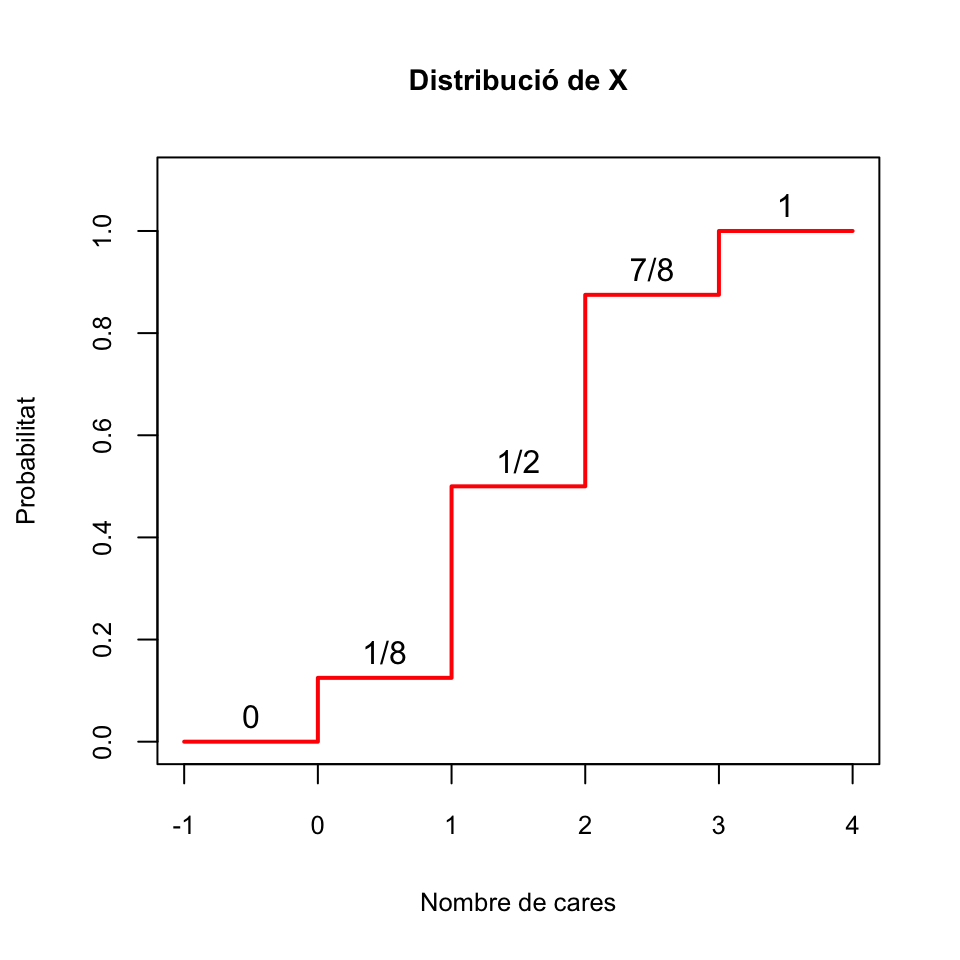

2.2 Variables aleatòries discretes
Una variable aleatòria és discreta quan els seus possibles valors són dades quantitatives discretes. Per exemple,
- Nombre de cares en 3 llançaments d’una moneda
- Nombre de fills d’una dona
- Nombre de casos nous de COVID-19 en un dia a Mallorca
2.2.1 Densitat i distribució
Sigui \(X: \Omega\to \mathbb{R}\) una variable aleatòria discreta.
El seu domini \(D_X\) és el conjunt dels valors que pot prendre: més concretament, és el conjunt dels \(x\in \mathbb{R}\) tals que \(P(X=x)>0\).
La seva funció de densitat és la funció \(f_X:\mathbb{R}\to [0,1]\) que assigna a cada \(x\in \mathbb{R}\) la probabilitat que \(X\) valgui \(x\): \[ f_X(x)=P(X=x) \] És a dir, \(f_X(x)\) és la proporció de subjectes de la població en els quals \(X\) val \(x\).
La seva funció de distribució és la funció \(F_X:\mathbb{R}\to [0,1]\) que assigna a cada \(x\in \mathbb{R}\) la probabilitat que \(X\) sigui més petit o igual que \(x\): \[ F_X(x)=P(X\leqslant x) \] És a dir, \(F_X(x)\) és la proporció de subjectes de la població en els quals \(X\) pren un valor \(\leqslant x\).
A la funció de distribució també se li sol dir funció de probabilitat acumulada per posar èmfasi en el fet que \(F_X(x)\) mesura la “freqüència relativa acumulada” de \(x\) en el total de la població.
Exemple 2.1 Sigui \(X\) la variable aleatòria “Llançam 3 vegades una moneda equilibrada i comptam les cares que obtenim”. Aleshores:
El seu domini és el conjunt dels seus possibles valors: \(D_X=\{0,1,2,3\}\).
La seva funció de densitat és definida per \(f_X(x)=P(X=x)\):
- \(f_X(0)=P(X=0)=1/8\) (la probabilitat de treure 0 cares en 3 llançaments)
- \(f_X(1)=P(X=1)=3/8\) (la probabilitat de treure 1 cara en 3 llançaments)
- \(f_X(2)=P(X=2)=3/8\) (la probabilitat de treure 2 cares en 3 llançaments)
- \(f_X(3)=P(X=3)=1/8\) (la probabilitat de treure 3 cares en 3 llançaments)
- \(f_X(x)=P(X=x)=0\) per a qualsevol altre valor de \(x\) (si \(x\notin\{0,1,2,3\}\), la probabilitat de treure \(x\) cares en 3 llançaments és 0)
En resum, la funció de densitat de \(X\) és \[ f_X(x) =\left\{ \begin{array}{ll} 1/8 & \text{ si $x=0$}\\ 3/8 & \text{ si $x=1$}\\ 3/8 & \text{ si $x=2$}\\ 1/8 & \text{ si $x=3$}\\ 0 & \text{ si $x\neq 0,1,2,3$} \end{array} \right. \]

Figura 2.1: Funció de densitat de la variable aleatòria que compta el nombre de cares en 3 llançaments
Vegem ara la seva funció de distribució \(F_X\). Recordau que \(F_X(x)=P(X\leqslant x)\) i que la nostra variable només pot prendre els valors 0, 1, 2 i 3.
Si \(x<0\), \(F_X(x)=P(X\leqslant x)=0\), perquè \(X\) no pot prendre cap valor estrictament negatiu.
Si \(0\leqslant x<1\), \(F_X(x)=P(X\leqslant x)=P(X=0)=f_X(0)=1/8\), perquè si \(0\leqslant x<1\), l’únic valor \(\leqslant x\) que pot prendre \(X\) és el 0.
Si \(1\leqslant x<2\), \(F_X(x)=P(X\leqslant x)=P(X=0\text{ o }X=1)\) \(=f_X(0)+f_X(1)=4/8=1/2\), perquè si \(1\leqslant x<2\), els únics valors \(\leqslant x\) que pot prendre \(X\) són 0 i 1.
Si \(2\leqslant x<3\), \(F_X(x)=P(X\leqslant x)=P(X=0\text{ o }X=1\text{ o }X=2)\) \(=f_X(0)+f_X(1)+f_X(2)=7/8\), perquè si \(2\leqslant x<3\), els únics valors \(\leqslant x\) que pot prendre \(X\) són 0, 1 i 2.
Si \(3\leqslant x\), \(F_X(x)=P(X\leqslant x)=1\), perquè si \(x\geqslant 3\), segur que obtenim un nombre de cares \(\leqslant x\).
Per tant, la funció \(F_X\) és la funció \[ F_X(x) =\left\{ \begin{array}{ll} 0 & \text{ si $x<0$}\\ 1/8 & \text{ si $0\leqslant x< 1$}\\ 4/8 & \text{ si $1\leqslant x< 2$}\\ 7/8 & \text{ si $2\leqslant x< 3$}\\ 1 & \text{ si $3\leqslant x$} \end{array} \right. \] El seu gràfic és el següent:

Figura 2.2: Funció de distribució de la variable aleatòria que compta el nombre de cares en 3 llançaments
Observau en aquest gràfic que aquesta funció de distribució \(F_X\) és creixent i escalonada. Això és general. Si \(X\) és una variable aleatòria discreta:
\(F_X\) és una funció escalonada, amb bots en els valors de \(D_X\), que són els únics amb probabilitat estrictament més gran que 0 i per tant els únics que “sumen” probabilitat. Més en concret:
Si \(x_0,y_0\in D_X\) i \(x_0<y_0\), llavors \(F_X(x_0)< F_X(y_0)\), perquè, com que \(P(X=y_0)>0\), \[ \begin{array}{rl} F_X(x_0)\!\!\!\!\! & =P(X\leqslant x_0)<P(X\leqslant x_0)+P(X=y_0)\\ & =P(X\leqslant x_0\text{ o }X=y_0)\leqslant P(X\leqslant y_0)=F_X(y_0) \end{array} \]
Si \(x_0\in D_X\) i dins \((x_0,x]\) no hi ha cap element de \(D_X\), aleshores \(F_X(x_0)=F_X(x)\), perquè \[ \begin{array}{rl} F_X(x)\!\!\!\!\! & =P(X\leqslant x)=P(X\leqslant x_0)+P(x_0<X\leqslant x)\\ & =P(X\leqslant x_0)+0= P(X\leqslant x_0)=F_X(x_0) \end{array} \] ja que, com que \((x_0,x]\cap D_X=\emptyset\), \(P(x_0<X\leqslant x)=0\).
Si \(x_0\in D_X\), \(P(X<x_0)<P(X\leqslant x_0)\), perquè \[ P(X\leqslant x_0)=P(X<x_0)+P(X=x_0)>P(X<x_0) \]
\(F_X\) és creixent, perquè si \(x\leqslant y\), tots els subjectes que compleixen que \(X\leqslant x\) també compleixen que \(X\leqslant y\), i per tant \[ P(X\leqslant x)\leqslant P(X\leqslant y). \]
Com que els valors que pren \(F_X\) són probabilitats, no poden ser ni més petits que 0 ni més grans que 1.
El coneixement de \(f_X\), més les regles del càlcul de probabilitats, permet calcular la probabilitat de qualsevol esdeveniment relacionat amb \(X\): \[ P(X\in A) =\sum_{x\in A} P(X=x) = \sum_{x\in A} f_X(x) \] En particular \[ F_X(x_0)=P(X\leqslant x_0)=\sum_{x\leqslant x_0} f_X(x) \]
La moda d’una variable aleatòria discreta \(X\) és el valor (o els valors) \(x_0\) tal que \(f_X(x_0)=P(X=x_0)\) és màxim. Per tant, la moda és el valor de \(X\) més probable o més freqüent en la població. Per exemple, per a la nostra variable aleatòria que compta el nombre de cares en 3 llançaments d’una moneda equilibrada, la moda són els valors 1 i 2.
Exemple 2.2 Una variable aleatòria discreta \(X\) és uniforme quan el seu domini \(D_X\) és finit i tots els seus elements tenen la mateixa probabilitat. És a dir, si \(D_X\) té \(m\) elements, aleshores \(P(X=x)=1/m\) per a cada \(x\in D_X\). Per exemple, el resultat de llançar un dau equilibrat és una variable aleatòria discreta.
Com que tots els resultats del domini d’una variable aleatòria discreta uniforme tenen la mateixa probabilitat, tots en són la moda (o cap no ho és, depèn de si veieu el tassó mig ple o mig buit).
Considerau la variable aleatòria \(X\) “Llançam una moneda equilibrada tantes vegades com sigui necessari fins que surti una cara per primera vegada, i comptam quantes vegades l’hem haguda de llançar”.
- Quin és el seu domini?
- Quina és la seva funció de densitat?
- Quina és la seva moda? Què significa?
- Quina és la seva funció de distribució? (Indicació: Calculau primer \(P(X>x)\), tenint en compte que \(X>x\) significa que en els primer \(x\) llançaments ha sortit creu, i per això hem hagut de llançar la moneda més de \(x\) vegades per obtenir una cara.)
2.2.2 Esperança
Quan prenem una mostra d’una variable aleatòria \(X\) definida sobre una població, podem calcular la mitjana i la desviació típica dels seus valors a fi i efecte d’obtenir una idea de quin és el valor central de la mostra i si els seus valors estan tots molt a prop d’aquest valor central o no. Naturalment, també ens podem preguntar per aquesta mena d’informació per al total de la població: Quin és el “valor mitjà” de \(X\) sobre tota la població? Aquesta variable, pren valors molt dispersos, o més aviat els pren concentrats al voltant del seu valor mitjà? La primera pregunta la responem amb la mitjana, o esperança, de \(X\), i la segona amb la seva variància i la seva desviació típica. Comencem amb la primera.
La mitjana, o esperança (o valor esperat, valor mitjà…), d’una variable aleatòria discreta \(X\) amb densitat \(f_X:D_X\to [0,1]\) és \[ E(X)=\sum_{x\in D_X} x\cdot f_X(x) \] Sovint també la indicarem amb \(\mu_X\).
La interpretació natural de \(E(X)\) és que és la mitjana dels valors de la variable \(X\) en el total de la població \(\Omega\). En efecte, com que \(P(X=x)\) és la proporció de subjectes de \(\Omega\) en els quals \(X\) val \(x\), \[ E(X)=\sum_{x\in D_X} x\cdot P(X=x) \] és la mitjana del valor de \(X\) sobre tots els subjectes de \(\Omega\). Comparau-ho amb l’exemple següent.
Exemple 2.3 Si, en una classe, un 10% dels estudiants han tret un 4 en un examen, un 20% un 6, un 50% un 8 i un 20% un 10, quina ha estat la nota mitjana obtenguda?
Segurament calcularíeu aquesta mitjana de la manera següent: \[ 4\cdot 0.1+6\cdot 0.2+8\cdot 0.5+10\cdot 0.2=7.6 \] Doncs aquest valor és la mitjana de la variable aleatòria \(X\) “Prenc un estudiant d’aquesta classe i mir quina nota ha tret en aquest examen”: \[ \begin{array}{rl} E(X)\!\!\!\!\! &=4\cdot P(X=4)+6\cdot P(X=6)+8\cdot P(X=8)+10\cdot P(X=10)\\ & = 4\cdot 0.1+6\cdot 0.2+8\cdot 0.5+10\cdot 0.2=7.6 \end{array} \]
A banda de la seva interpretació com a “la mitjana de \(X\) en el total de la població”, \(E(X)\) és també el valor esperat de \(X\), en el sentit següent:
Suposau que prenem a l’atzar una mostra de \(n\) subjectes de la població, mesuram \(X\) sobre ells i calculam la mitjana aritmètica dels \(n\) valors obtenguts. Aleshores, quan la mida \(n\) de la mostra tendeix a \(\infty\), aquesta mitjana aritmètica tendeix a valer \(E(X)\) “gairebé sempre”, en el sentit que la probabilitat que el seu límit sigui \(E(X)\) és 1.
És a dir: si mesuràssim \(X\) sobre molts subjectes triats a l’atzar i calculàssim la mitjana dels valors obtenguts, és gairebé segur que obtendríem un valor molt proper a \(E(X)\).
Exemple 2.4 Seguim amb la variable aleatòria \(X\) “Llançam una moneda equilibrada 3 vegades i comptam les cares que obtenim”. La seva esperança és \[ E(X)= 0\cdot \frac{1}{8}+1\cdot \frac{3}{8}+2\cdot \frac{3}{8}+3\cdot \frac{1}{8}=1.5 \]
Això ens diu que:
La mitjana de \(X\) és 1.5: El valor mitjà de la variable \(X\) sobre tota la població de seqüències de 3 llançaments d’una moneda equilibrada és 1.5.
El valor esperat de \(X\) és 1.5: Si repetíssim moltes vegades l’experiment de llançar la moneda 3 vegades i comptar les cares, de mitjana obtendríem, molt probablement, un valor molt pròxim a 1.5. Abreujam això dient que si llançam la moneda 3 vegades, esperam treure 1.5 cares.
Més en general, si \(X\) és una variable aleatòria i \(g:\mathbb{R}\to \mathbb{R}\) és una funció, l’esperança de \(g(X)\) és \[ E(g(X))=\sum_{x\in D_X} g(x)\cdot f_X(x). \] Un altre cop, la interpretació natural d’aquest valor és que és la mitjana de \(g(X)\) sobre la població, i també que és el valor “esperat” de \(g(X)\) en el sentit anterior.
Exemple 2.5 Si llançam una moneda equilibrada 3 vegades, comptam les cares i elevam aquest nombre de cares al quadrat, quin valor esperam obtenir?
Serà l’esperança de \(X^2\), on \(X\) és la variable aleatòria “Llançam una moneda equilibrada 3 vegades i comptam les cares que obtenim” (és a dir, aquesta \(X^2\) és la variable aleatòria “Llançam una moneda equilibrada 3 vegades, comptam les cares i elevam aquest número al quadrat”):
\[ E(X^2)= 0\cdot \frac{1}{8}+1\cdot \frac{3}{8}+2^2\cdot \frac{3}{8}+3^2\cdot \frac{1}{8}=3 \]
Fixau-vos que \(E(X^2) \neq E(X)^2\). Per exemple, en els dos darrers exemples hem vist que si \(X\) és la variable aleatòria que compta el nombre de cares en 3 llançaments d’una moneda equilibrada, \(E(X^2)=3\) però \(E(X)^2=1.5^2=2.25\).
En general, donades una variable aleatòria \(X\) i una aplicació \(g:\mathbb{R}\to \mathbb{R}\), el més habitual és que \(E(g(X))\neq g(E(X))\).
L’esperança de les variables aleatòries discretes té les propietats següents, totes molt raonables si les interpretau en termes del valor mitjà de \(X\) sobre la població:
Sigui \(b\) una variable aleatòria constant, que sobre tots els individus de la població pren el mateix valor \(b\in \mathbb{R}\). Aleshores, \(E(b)=b\).
Si en una classe tothom treu un 8 d’un examen, la nota mitjana és un 8, no?
L’esperança és lineal:
Si \(X\) és una variable aleatòria i \(a,b\in \mathbb{R}\), \(E(aX+b)=aE(X)+b\)
Si en una classe la mitjana d’un examen ha estat un 6 i decidim multiplicar per 1.2 totes les notes i sumar-les 1 punt, la mitjana de la nova nota serà 1.2·6+1=8.2, no?
Si \(X,Y\) són dues variables aleatòries, \(E(X+Y)=E(X)+E(Y)\).
Si en una classe la mitjana de la part de qüestions d’un examen ha estat un 3.5 i la de la part d’exercicis ha estat un 3, i la nota de l’examen és la suma de les notes de les dues parts, la nota mitjana de l’examen serà un 3.5+3=6.5, no?
Combinant les dues propietats anteriors, si \(X_1,\ldots,X_n\) són variables aleatòries i \(a_1,\ldots,a_n,b\in \mathbb{R}\), \[ E(a_1X_1+\cdots+a_nX_n+b)=a_1E(X_1)+\cdots+a_nE(X_n)+b \]
L’esperança és monòtona creixent: Si \(X\leqslant Y\) (en el sentit que el valor de \(X\) sobre cada subjecte de la població \(\Omega\) és més petit o igual que el valor de \(Y\) sobre ell), llavors \(E(X)\leqslant E(Y)\).
Si tots traieu millor nota de Matemàtiques II que de Matemàtiques I, la nota mitjana de Matemàtiques II serà més gran que la de Matemàtiques I, no?
2.2.3 Variància i desviació típica
La variància d’una variable aleatòria discreta \(X\) és \[ \sigma(X)^2 =E((X-\mu_X)^2) =\sum_{x\in D_X} (x-\mu_X)^2\cdot f_X(x) \] És a dir, és la mitjana del quadrat de la diferència entre \(X\) i la seva mitjana \(\mu_X\). També la indicarem amb \(\sigma_X^2\).
Fixau-vos que es tracta de la traducció “poblacional” de la definició de variància per a una mostra, i per tant serveix per mesurar el mateix que aquella: la dispersió dels resultats de \(X\) respecte de la mitjana. Només que ara és per a tota la població, i no per a una mostra.
La identitat següent vos pot ser útil.
Teorema 2.1 \(\sigma(X)^2=E(X^2)-\mu_X^2\).
La desviació típica (o desviació estàndard) d’una variable aleatòria discreta \(X\) és l’arrel quadrada positiva de la seva variància: \[ \sigma(X)=+\sqrt{\sigma(X)^2} \] També mesura la dispersió dels valors de \(X\) respecte de la mitjana. Sovint la indicarem amb \(\sigma_X\).
El motiu per introduir la variància i la desviació típica per mesurar la dispersió dels valors de \(X\) és la mateixa que en estadística descriptiva: la variància és més fàcil de manejar (no involucra arrels quadrades) però les seves unitats són les de \(X\) al quadrat, mentre que les unitats de la desviació típica són les de \(X\), i per tant el seu valor és més fàcil d’interpretar.
Exemple 2.6 Seguim amb la variable aleatòria \(X\) “Llançam una moneda equilibrada 3 vegades i comptam les cares que obtenim”. Recordem que \(\mu_X=E(X)=1.5\). Aleshores, la seva variància és:
\[ \begin{array}{rl} \sigma(X)^2 \!\!\!\!\! & \displaystyle=(0-1.5)^2\cdot \frac{1}{8}+(1-1.5)^2\cdot \frac{3}{8}\\ &\displaystyle\qquad +(2-1.5)^2\cdot \frac{3}{8}+(3-1.5)^2\cdot \frac{1}{8}=0.75 \end{array} \] Si recordam que \(E(X^2)=3\), podem veure que \[ E(X^2)-\mu_X^2=3-1.5^2=0.75=\sigma(X)^2 \] La seva desviació típica és \[ \sigma(X) =\sqrt{\sigma(X)^2}=\sqrt{0.75}= 0.866 \]
Vegem algunes propietats de la variància i la desviació típica:
Si \(b\) és una variable aleatòria constant que sobre tots els individus de la població pren el valor \(b\in \mathbb{R}\), aleshores \(\sigma(b)^2=\sigma(b)=0\).
Una variable aleatòria constant té zero dispersió.
El recíproc també és cert: si \(\sigma(X)^2=0\), la variable \(X\) és constant.
En efecte, observau a \[ \sigma(X)^2 =\sum_{x\in D_X} (x-\mu_X)^2\cdot f_X(x) \] que \(\sigma(X)^2\) és una suma de nombres positius. Per tant, si és 0, tots els sumands \((x-\mu_X)^2\cdot f_X(x)\) han de ser 0. Però \(f_X(x)>0\) per a cada \(x\in D_X\). Per tant, si \(\sigma(X)^2=0\), tots els \(x-\mu_X\), amb \(x\in D_X\), han de ser 0, és a dir, \(D_X=\{\mu_X\}\): \(X\) només pot prendre un valor.
\(\sigma(aX+b)^2=a^2\cdot \sigma(X)^2\).
\(\sigma(aX+b)=|a|\cdot \sigma(X)\) (recordau que la desviació típica és positiva, i \(+\sqrt{a^2}=|a|\)).
Si \(X,Y\) són variables aleatòries independents, \[ \sigma(X+Y)^2=\sigma(X)^2+\sigma(Y)^2 \] i per tant \[ \sigma(X+Y)=\sqrt{\sigma(X)^2+\sigma(Y)^2} \] Si no són independents, en general aquesta igualtat és falsa. Per posar un exemple extrem, \[ \sigma(X+X)^2=4\sigma(X)^2 \neq \sigma(X)^2+\sigma(X)^2. \]
Més en general, si \(X_1,\ldots,X_n\) són variables aleatòries independents (i, en principi, només en aquest cas) i \(a_1,\ldots,a_n,b\in \mathbb{R}\), \[ \begin{array}{l} \sigma(a_1X_1+\cdots+a_nX_n+b)^2=a_1^2\cdot\sigma(X_1)^2+\cdots+a_n^2\cdot\sigma(X_n)^2\\ \sigma(a_1X_1+\cdots+a_nX_n+b)=\sqrt{a_1^2\cdot\sigma(X_1)^2+\cdots+a_n^2\cdot\sigma(X_n)^2} \end{array} \]
2.2.4 Quantils
Sigui \(p\in [0,1]\). El quantil d’ordre \(p\) (o \(p\)-quantil) d’una variable aleatòria discreta \(X\) és el valor \(x_p\in D_X\) tal que \(P(X\leqslant x_p)\geqslant p\) però \(P(X< x_p)<p\). És a dir, el valor \(x_p\in D_X\) més petit tal que \(P(X\leqslant x_p)\geqslant p\).
Per exemple, que el 0.25-quantil d’una variable aleatòria discreta \(X\) sigui, jo què sé, 8, significa que almanco un 25% de la població té un valor de \(X\) més petit o igual que 8, però manco d’un 25% de la població té un valor de \(X\) estrictament més petit que 8. És a dir, 8 és el valor més petit per al qual la probabilitat acumulada arriba al 25%.
Si existeix algun \(x_p\in D_X\) tal que \(P(X\leqslant x_p)=p\), llavors el \(p\)-quantil és aquest \(x_p\), perquè, per a tot altre \(x\in D_x\):
- Si \(x<x_p\), \(P(X\leqslant x)<P(X\leqslant x_p)=F_X(x_p)=p\) i per tant \(x\) no pot ser el \(p\)-quantil de \(X\).
- Si \(x>x_p\), \(p=P(X\leqslant x_p)\leqslant P(X<x)\), i per tant \(x\) tampoc no pot ser el \(p\)-quantil de \(X\).
Com en estadística descriptiva, alguns quantils de variables aleatòries tenen noms propis. Per exemple:
La mediana de \(X\) és el seu 0.5-quantil.
El primer i el tercer quartils de \(X\) són els seus \(0.25\)-quantil i \(0.75\)-quantil, respectivament.
Etc.
Exemple 2.7 Seguim amb la variable aleatòria \(X\) “Llançam una moneda equilibrada 3 vegades i comptam les cares que obtenim”. Recordem que la seva funció de distribució és
\[ F_X(x)=\left\{ \begin{array}{ll} 0 & \text{ si $x<0$}\\ 0.125 & \text{ si $0\leqslant x<1$}\\ 0.5 & \text{ si $1\leqslant x<2$}\\ 0.875 & \text{ si $2\leqslant x<3$}\\ 1 & \text{ si $3\leqslant x $} \end{array} \right. \]

Llavors, per exemple:
El seu 0.125-quantil és 0
El seu 0.25-quantil és 1
La seva mediana és 1
El seu 0.75-quantil és 2
Encara que emprem “mitjana”, “variància”, “quantils”, etc. tant per a variables aleatòries com per a mostres, no heu de confondre-les.
Una variable aleatòria representa una característica numèrica dels subjectes d’una població:
“Prenem un estudiant de la UIB i mesuram la seva alçada en m.”
La mitjana i la variància d’aquesta variable són les de tota la població d’estudiants de la UIB i descriuen propietats de tota la població d’estudiants de la UIB.
Una mostra d’una variable aleatòria són els valors de la variable sobre un subconjunt de la població.
Mesuram les alçades (en m) de 50 estudiants de la UIB d’aquest curs.
La mitjana i la variància d’aquesta mostra són només les d’aquestes 50 alçades, i poden servir per descriure aquest conjunt de 50 alçades o per estimar els valors de la mitjana i la variància de la població d’estudiants de la UIB
Quan volguem destacar que una mitjana, una variància etc. són les d’una variable aleatòria sobre tota una població, les qualificarem de poblacionals.